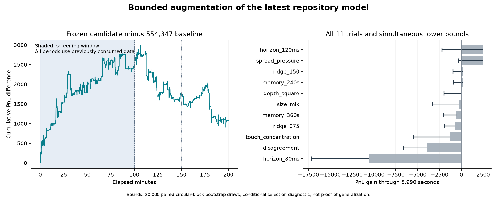

Retain the verified 554,347 model
The augmentation did not pass every predeclared gate. The recommended file preserves the verified baseline with runtime-only cleanup.
What changed upstream
The latest main commit inspected at the start was 77d6ea1. It froze strategies/round1_submission.py at 554,347. Intermediate commits preserved 538,075 and 544,764 queue policies, 550,873 selective inside quotes, and 554,318 cancellation-triggered replenishment. The previous independent Codex extension scored 534,941.
The latest architecture uses fifteen causal features and 100 ms matured labels sampled every 20 ms. It fits an exponentially weighted ridge model once per second, with 300-second memory. It caps individual order quantities at 20 for depth signals, uses inventory skew 0.025, quotes one tick inside a spread of at least two ticks when predicted edge exceeds 0.30, and replenishes after cancellation confirmations from quotes cached for at most 5 ms. Pending exposure remains reserved. Execution methods were held fixed throughout this experiment.
Cheap features with structural constraints
Every added feature uses aggregates already calculated by the baseline. None needs an extra order-book scan, an absolute price/time index, or an offline-fitted transformation. The new terms are bounded, unchanged by translating all prices, and change sign when bid and ask sides are mirrored. Tests verify those properties. These choices reduce avoidable fitting freedom but cannot guarantee generalization.
| Feature family | Purpose | Expression |
|---|---|---|
| depth_square | Transfer the previously useful signed depth nonlinearity. | depth_imbalance*abs(depth_imbalance) |
| touch_concentration | Asymmetry in the fraction of near-depth liquidity at the touch. | br/max(1,bd_r)-ar/max(1,ad_r); bn/max(1,bd_n)-an/max(1,ad_n) |
| size_mix | Capped and raw mean order-size asymmetries, separate from order counts. | (br*an-ar*bn)/max(1,br*an+ar*bn); (bq*an-aq*bn)/max(1,bq*an+aq*bn) |
| disagreement | Nonlinear touch pressure conditional on disagreement with nearby depth. | robust_imbalance*abs(robust_imbalance-depth_imbalance); count_imbalance*abs(count_imbalance-depth_count) |
| spread_pressure | Spread-conditioned robust volume/count pressure; four-tick saturation. | min(4,spread)*robust_imbalance; min(4,spread)*count_imbalance |
Here br/ar are capped touch volumes, bd_r/ad_r capped two-tick depth volumes, bn/an touch order counts, and bd_n/ad_n depth counts. The six parameter probes changed one setting at a time: memory 240/360 seconds, ridge coefficient 0.00075/0.0015 (floor 10 retained), or horizon 80/120 ms. There was no broad grid, automatic stacking, or retuning after confirmation.
Selection fixed before replay
Eleven candidate definitions were frozen alongside original and cleaned controls. Selection used twenty paired five-minute PnL blocks through exactly 5,990 seconds, excluding artificial prefix-end order draining. Gates required positive gains in both chronological halves, at least 0.5% total gain, at least 12/20 positive blocks, and a positive one-sided 95% simultaneous lower bound across all eleven trials. The bound used 20,000 circular paired-block bootstrap draws, ten-minute blocks resampled within each half. The largest passing lower bound determined the single frozen finalist.
| Variant | Screen gain | Half gains | Positive blocks | Simultaneous lower bound | Screen |
|---|---|---|---|---|---|
| spread_pressure | +2,426 | +1,951 / +475 | 16/20 | -335 | Fail |
| memory_240s | +165 | +469 / -304 | 10/20 | -964 | Fail |
| ridge_150 | +192 | +351 / -159 | 11/20 | -989 | Fail |
| ridge_075 | -745 | -270 / -475 | 6/20 | -1,896 | Fail |
| depth_square | -72 | +226 / -298 | 8/20 | -1,981 | Fail |
| memory_360s | -564 | +52 / -616 | 8/20 | -2,039 | Fail |
| horizon_120ms | +2,445 | +1,837 / +608 | 11/20 | -2,243 | Fail |
| size_mix | -259 | -692 / +433 | 13/20 | -3,325 | Fail |
| touch_concentration | -1,284 | -621 / -663 | 8/20 | -5,489 | Fail |
| disagreement | -3,930 | -944 / -2,986 | 4/20 | -6,627 | Fail |
| horizon_80ms | -10,561 | -4,136 / -6,425 | 4/20 | -17,130 | Fail |
These bootstrap bounds describe conditional uncertainty within the reused tape and fixed trial set. They do not account for all earlier searches across the repository, establish a fresh test set, or supply a calibrated probability of winning on another round.

Frozen confirmation
| Replay | Baseline | Candidate | Gain |
|---|---|---|---|
| Round1, 5 ms | 554,347 | 555,421 | +1,074 |
| Older sample_v2 | 272,830 | 272,786 | -44 |
| Round1, 20 ms | 462,925 | 463,168 | +243 |
| Round1, 50 ms | 326,485 | 328,214 | +1,729 |
Normal-latency one-second sampled drawdown: 834 baseline versus 752 candidate. Every run checks zero position penalties and maximum actual/submitted potential exposure of 100. Later data is reused diagnostic evidence; coefficients continue learning only from matured past outcomes.
| Period | Baseline | Candidate | Gain |
|---|---|---|---|
| Screen, first 50 minutes | 130,119 | 132,070 | +1,951 |
| Screen, next 49m 50s | 143,116 | 143,591 | +475 |
| Confirmation, to 150 minutes | 144,590 | 143,894 | -696 |
| Confirmation, final 50 minutes | 136,522 | 135,866 | -656 |
All promotion gates
| screen_passed | FAIL |
| later_period_1_gain | FAIL |
| later_period_2_gain | FAIL |
| full_gain_at_least_half_percent | FAIL |
| transfer_loss_at_most_one_percent | PASS |
| latency20_loss_at_most_one_percent | PASS |
| latency50_loss_at_most_one_percent | PASS |
| normal_latency_drawdown_within_125_percent | PASS |
| all_risk_invariants | PASS |
Ready-to-test file and reproducibility
Download the recommended standalone file. Its executable AST matches the frozen recommended source; only its documentation changed. A separate replay of that exact export through the unmodified engine matched every official result field and the full PnL-curve hash.
Download the unpromoted spread-pressure experiment for separate research. Its executable AST matches the frozen diagnostic source; the header explicitly records its failed screening gate.
Exact-export local runtime: 196.8 CPU seconds, 44.6 MiB peak working set; 12,313 source bytes. Local timing is not a server-runtime guarantee. Sixty tests passed, covering causal label timing, nonlinear-feature invariance, bootstrap properties, cached quote validity and asynchronous reservation accounting. Source, tape and engine hashes accompany all outcomes.
Recommended source SHA-256: c0a453d0160e7ed4ddf0eb364dade1b5509be4c82d839d950b58f0bea97b643d
Machine-readable decision and results. The repository archive retains the frozen protocol, all thirteen source files, all rejected trials and every confirmation run. Raw market data is excluded.